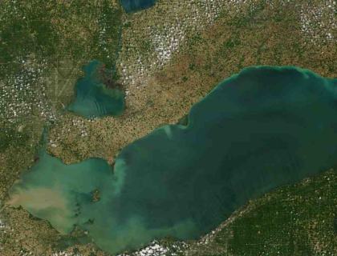

Great Lakes Legacy Act Support
Template #143

USEPA has been working under the Great Lakes Legacy Act (GLLA) to assess and remediate contaminated sediments in Great Lakes AOCs since 2004. USEPA expects to continue with these activities under funds from the GLRI. The work under this task will assist GLNPO in evaluating the relationship between sediment contamination and adverse biological effects at select site(s) which will be helpful in preparing sites for sediment remediation under the GLLA.
The science issues discussed above for this task will be approached through several inter-related objectives. It is anticipated that different laboratories may take lead responsibility for each of these objectives. Funding required for these other organizations to provide technical assistance or to conduct studies may be provided: (1) through a modification to this IAG, (2) through separate IAGs established between USEPA and other organizations, or (3) through separate funding mechanisms from funding sources other than USEPA. Specific objectives include:
- Form a Sediment Expert Study Group. To maximize this learning opportunity, a broadly based Sediment Expert Study Group comprised of sediment assessment experts will be established to evaluate problematic sites or data sets and identify key issues for further study.
- Evaluate and improve the quality of sediment toxicity or sediment bioaccumulation testing. Concordance of sediment chemistry and toxicity or bioaccumulation cannot be expected if data for sediment chemistry or for toxicity or bioaccumulation are compromised.
- Determine the strengths and weaknesses of 10-day versus longer term sediment toxicity testing. In general, contaminated sediment assessments have tended toward the use of longer-term sediment toxicity tests for site assessment, on the presumption that they have greater sensitivity than do shorter-term tests. However, this greater sensitivity is generally presumed, but not adequately quantified.
- Pursue additional analyses on “outlier” sediments. In many cases concordance of sediment chemistry and toxicity is complicated by small numbers of samples that deviate from expected trends, samples that are either (a) found to be toxic but without clear causes within measured contaminants or (b) found to be non-toxic but have high levels of contamination which would be expected to cause toxicity.
- Evaluate non-toxicant influences on sediment toxicity test results. The
influence of sediment nutritive content or other non-toxicant factors on
sediment toxicity tests must be better understood. Comparing responses among
relatively low contamination samples within and across GLNPO sites will likely
offer opportunities to evaluate to potential effects of non-toxicant factors on
organism response.
Chris Ingersoll
cingersoll@usgs.gov
Edward Little
elittle@usgs.gov